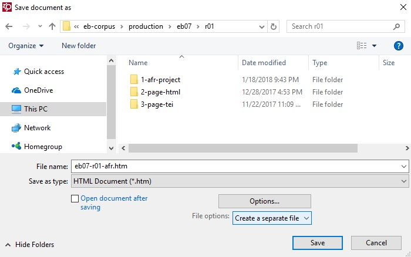

Saving as Output
How to output your OCR results.
ABBYY FineReader can output results as anything from a Word document to a text or PDF file. We output as HTML because it is the easiest format to convert into TEI.
- To output your finished pages, select Formatted text from the drop-down box on the main toolbar. Then choose Save.
-
In the Save document as window, make sure you are saving
as an HTML Document (*.htm) and select the option to
Create a separate file for each page. (Otherwise, you
will output a single file for all 250 pages and have to repeat this step.)

- Save to the appropriate 2-page-html folder, as explained in the section on the 2-page-html Folder.